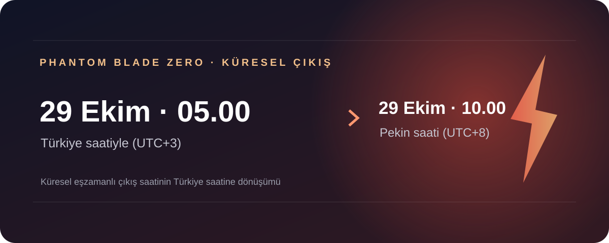
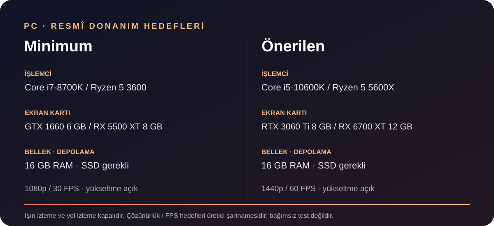
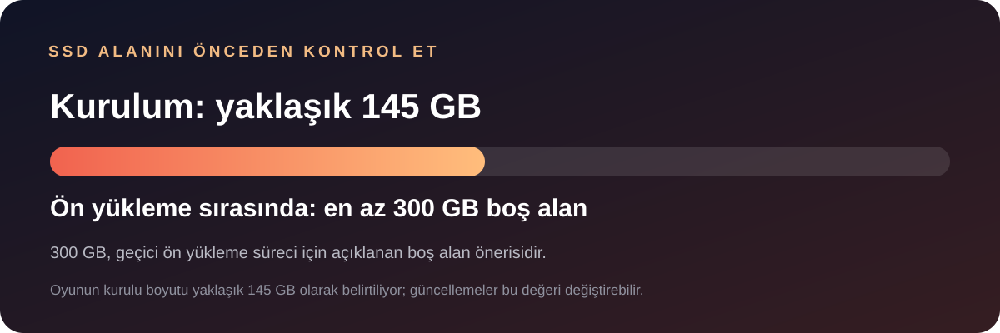

Phantom Blade Zero, Türkiye'de 29 Ekim 2026 Perşembe günü saat 05.00'te oynanabilir olacak. S-GAME'in duyurduğu küresel çıkış saati Pekin'de 10.00; Türkiye saati UTC+3 olduğundan arada beş saat fark var. Oyun PlayStation 5 ve PC için geliyor. PC sürümünü bekleyenlerin indirme öncesinde SSD alanını ve ekran kartı şartlarını kontrol etmesinde fayda var.
Bu yazı çıkış öncesi bir bilgi rehberi; oyunu bizzat oynayıp performans testi yaptığımız anlamına gelmiyor. Saat ve donanım bilgileri stüdyonun duyurularına dayanıyor. Güncelleme, platform mağazası veya bölgesel yayın saati değişikliği olursa ilgili mağaza sayfası son sözü söyleyecek.

Türkiye'de çıkış tarihi ve saati ne?
S-GAME, çıkış gününü 29 Ekim 2026 olarak duyuruyor; geliştiricinin Steam topluluk sayfasındaki küresel PC takvimi 29 Ekim saat 10.00 Pekin saatini veriyor. Çin UTC+8, Türkiye UTC+3 kullanıyor. Bu nedenle Türkiye'de takvim 29 Ekim'e döndüğünde oyun saat 05.00 civarında açılacak. Amerika'da tarih farkı nedeniyle duyurular 28 Ekim akşamı olarak görünebilir; bu, Türkiye için farklı bir gün olduğu anlamına gelmiyor.
Ön sipariş mağazalarda açılmış durumda. Platforma ve seçilen sürüme göre satın alma ekranındaki fiyatı kontrol et; fiyat, vergi, para birimi ve bölgesel mağaza uygulaması değişebilir. Standart ve Deluxe sürümlerin içerikleri farklı. S-GAME'in sayfasına göre ön sipariş kostümü ve aksesuarı oyun içi ilerlemeyle de elde edilebiliyor; bunlar tek başına ön sipariş için zorunlu gerekçe sayılmamalı.
Phantom Blade Zero nasıl bir oyun?
S-GAME oyunu, wuxia anlatısını fantastik unsurlar ve halk korkusuyla birleştiren bir aksiyon rol yapma oyunu olarak tanımlıyor. Oyuncu, ömrüne yalnızca 66 gün kaldığını öğrenen Soul adlı savaşçıyı yönetiyor; suikastçılarla karşılaşıp Phantom World içindeki olayların arkasındaki sırları araştırıyor. “Kungfupunk” adıyla anılan dünya, geleneksel dövüş sanatları estetiğini karanlık ve mekanik bir fantezi atmosferiyle buluşturmayı hedefliyor.
PlayStation Blog'daki geliştirici anlatımına göre ana ve ikincil silah seçenekleri, aksesuarlarla kurulum değiştirme ve bazı düşmanlardan yeni silah edinme sistemleri bulunuyor. Zorluk tercihleri arasında hikâyeye odaklanan Wayfarer, daha yüksek mücadele isteyen Hellwalker ve Sixty-Six Days adları geçiyor. Bunlar geliştiricinin açıkladığı tasarım özellikleri; denge ve oynanış hissi konusunda kesin yargı için oyunun yayımlanmış sürümünü deneyimlemek gerekiyor.

PC sistem gereksinimleri
Stüdyonun resmî şartnamesinde hem minimum hem de önerilen yapılandırma için 16 GB bellek ve SSD gerekiyor. Minimum profil 1080p/30 FPS hedefiyle yükseltme açıkken Core i7-8700K veya Ryzen 5 3600 işlemci ve GTX 1660 6 GB ya da Radeon RX 5500 XT 8 GB ekran kartı istiyor. Önerilen profil ise yükseltme açık 1440p/60 FPS hedefiyle Core i5-10600K veya Ryzen 5 5600X ve RTX 3060 Ti 8 GB ya da RX 6700 XT 12 GB öneriyor.
Bu sayılar bağımsız performans testi değil, geliştiricinin hedefleri. Özellikle “1440p / 60 FPS” ifadesini yükseltmesiz yerel çözünürlük garantisi gibi okumamak gerekiyor. Grafik seçenekleri, sahne yoğunluğu, sürücü ve güncellemeler sonucu etkileyebilir. Işın izleme ve yol izleme için daha güçlü ayrı kart hedefleri listelendiğinden, bu efektleri açmayı planlayanlar resmî tabloda kendi kartlarını ayrıca kontrol etmeli.
145 GB kurulum, ön yüklemede 300 GB alan
S-GAME, PC oyun dosyasının yaklaşık 145 GB olacağını ve ön yükleme işlemi sırasında diskte en az 300 GB boş alan ayrılmasını istiyor. Buradaki 300 GB kalıcı kurulum boyutu olarak açıklanmıyor; ön yükleme sürecinde gereken boş alan. İndirmeden önce hedef SSD'de yer aç, gereksiz dosyaları kaldır ve başka bir sürücüyü seçiyorsan mağaza uygulamasındaki kurulum konumunu doğrula. Oyun kurulduktan sonraki gerçek kullanım, yama ve güncellemelerle değişebilir.

Kimler çıkış günü denemeli, kimler bekleyebilir?
- Hızlı yakın dövüş ve kung-fu estetiğini seviyorsan: Resmî oynanış videoları ve sistem bilgileri beklentine uyuyorsa çıkış günü bakabilirsin.
- PC'de oynayacaksan: Önce ekran kartı, SSD ve boş alan durumunu karşılaştır. Minimum hedef için bile yükseltme kullanıldığını aklında tut.
- Performans ve denge incelemesi arıyorsan: İlk gün güncelleme durumu ve bağımsız testler ortaya çıkana dek beklemek daha bilinçli bir seçim olabilir.
- Fiziksel PS5 kopyası istiyorsan: Satın almadan önce yerel mağazadaki bulunabilirlik ve teslimat bilgilerini ayrıca kontrol et.
Kısa cevaplar
- Türkiye çıkış saati ne? 29 Ekim 2026 saat 05.00 (Türkiye saati); küresel takvimde 10.00 Pekin saati.
- Hangi platformlarda? PlayStation 5 ve PC. PC mağazalarını satın alma öncesinde kontrol et.
- Oyunun boyutu kaç GB? PC kurulum boyutu yaklaşık 145 GB; ön yükleme sürecinde en az 300 GB boş alan isteniyor.
- Minimum PC ekran kartı ne? GTX 1660 6 GB veya Radeon RX 5500 XT 8 GB. Hedef 1080p/30 FPS ve yükseltme açık.
- Türkçe dil var mı? Steam mağazasındaki desteklenen 15 dil arasında Türkçe listelenmiyor; satın almadan önce mağaza dil tablosunu tekrar kontrol et.
Sonuç
Phantom Blade Zero'nun Türkiye'deki çıkışını bekleyenler için pratik kontrol listesi basit: tarihi 29 Ekim, saati 05.00 olarak not et; PC'de SSD ve ekran kartı şartlarını karşılaştır; ön yükleme için 300 GB boş alan tavsiyesini oyunun 145 GB civarındaki kurulu boyutuyla karıştırma. Oyunun nasıl çalıştığına dair nihai değerlendirme için çıkış sonrası gerçek oynanış ve performans incelemeleri belirleyici olacak.
Kaynaklar
- S-GAME resmî Phantom Blade Zero sitesi: çıkış tarihi ve sürüm bilgileri
- S-GAME / Steam: çıkış takvimi, ön yükleme alanı ve desteklenen diller
- Steam mağaza sayfası: desteklenen diller, sürümler ve PC gereksinimleri
- S-GAME: Phantom Blade Zero PC sistem gereksinimleri
- PlayStation Blog / S-GAME: Wulin dünyası, silahlar ve zorluk seçenekleri
Son kontrol: 28 Ekim 2026. Çıkış saati Pekin'deki duyurudan Türkiye saati UTC+3'e çevrilmiştir. Donanım ve depolama bilgileri stüdyonun açıklamalarına dayanır; oyun güncellemeleriyle değişebilir.